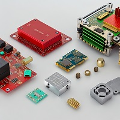
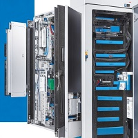
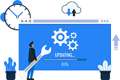

Services
The complete information regarding our services you will find on the "Service" page.
- Custom Hardware Design and DevelopmentAt Translead, we understand that off-the-shelf solutions may not always meet your unique business needs. Our custom hardware design and development service provides you with tailor-made, efficient, and innovative hardware solutions, designed to perfectly align with your business objectives and operational requirements.
- Bespoke Software SolutionsOur bespoke software solutions are crafted to address your specific business challenges and amplify your capabilities. We specialize in creating tailored software solutions, from enterprise resource planning systems to customer relationship management software, ensuring seamless integration with your existing infrastructure.
- Information Consulting ServicesInformation is power in today's digital age. Our expert consultants analyze industry trends, market data, and provide actionable insights to help you make informed business decisions. We are committed to helping your business navigate the complex digital landscape and stay ahead of the competition.
- Innovation Lab ServicesTranslead's Innovation Lab is at the forefront of technological advancements. We explore emerging technologies, identify potential applications, and integrate these discoveries into our custom hardware and software solutions. This service is dedicated to keeping our clients at the cutting edge of technology and future-proofing their businesses.
- Post-Implementation Support and MaintenanceOur commitment to our clients doesn't end at delivery. We provide comprehensive post-implementation support and maintenance services to ensure that our solutions continue to function optimally and evolve with your changing business needs. Our support team is on standby to provide assistance, carry out system updates, and resolve any issues you may encounter.
- May 2022In May 2023, we launched the Translead Innovation Lab, a dedicated R&D department aimed at exploring the forefront of technology and applying these breakthroughs to our customized hardware and software solutions. This lab underpins our commitment to keep Translead—and our clients—at the cutting edge of industry developments.
- December 2022By the end of our first year, we expanded our services to encompass comprehensive information consulting. This strategic move enabled us to provide a more holistic approach, helping businesses make informed decisions based on accurate, timely, and relevant information.
- June, 2022Within just three months of our founding, we secured our first major client partnership, a testament to our commitment and expertise. This milestone marked the beginning of Translead's impactful journey in the tech industry, as we worked to deliver tailored solutions for businesses.
- March 2022Translead was founded with a pioneering vision: to transcend the ordinary and lead the extraordinary in the realm of customized hardware, software, and information consulting services. Our journey started with a small but passionate team committed to empowering businesses with bespoke technology solutions.